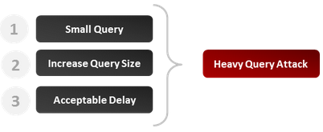

Time-Based Blind SQL Injection using Heavy Query
Heavy Query
For different reasons, it might happen that it is impossible to use time delay functions or procedures in order to achieve a classic time delay injection. In these situations, the best option is to simulate it with a heavy query that will take noticeable time to get executed by the database engine. This article shows how it can be done and it presents an example for the main DBMS.
Principle
The injected query should not rely on user tables since in most cases the attacker will have no information about those yet. Queries presented in the following section rely on system tables. The execution time is essentially caused by the large number of lines returned.
Keep in mind that the time to execute each query presented in this article can tremendously vary depending on the number of rows contained or returned by the table (or view). This number can be influenced by many factors like: the permissions of your user, the size of the database, the server performance, etc. You should begin with a query joining 2 tables and slowly increment until you can generate an acceptable delay.

MySQL or SQL Server
Chances are low that you have to use the heavy query approach in MySQL or SQL Server since these DBMS make it relatively easy to inject classic code delays in a vulnerable field. However, it could still happen if, for example, some function or characters are blacklisted. Here is an example of heavy query that would work fine on SQL Server and on MySQL (version 5 or more).
Heavy MySQL query.
SELECT count(*) FROM information_schema.columns A, information_schema.columns B, information_schema.columns C
In my test environment, the query above returns 594823321 and takes about 10 seconds to execute. Let’s now see how it could be used to identify if a vulnerability is present.
Malicious parameter.
1 AND 1>(SELECT count(*) FROM information_schema.columns A, information_schema.columns B, information_schema.columns C)
Query generated.
SELECT * FROM products WHERE id=1 AND 1>(SELECT count(*) FROM information_schema.columns A, information_schema.columns B, information_schema.columns C)
If the server response takes more time, a vulnerability is probably present. Otherwise we can conclude the field is safe.
Oracle
As explained in the article about time-based attacks, in most cases you will need to use heavy queries in order to achieve this kind of SQL injection. Below is an example of query that takes a lot of time to be executed in this DBMS.
Heavy Oracle query.
SELECT count(*) FROM all_users A, all_users B, all_users C
In my Oracle test environment the query above is executed in no time since I have very few users. When I grow the FROM clause to 7 tables it takes about 15 seconds. Let’s now see how it could be integrated in a vulnerable field.
Malicious parameter (time-based injection).
1 AND 1<SELECT count(*) FROM all_users A, all_users B, all_users C
Query generated.
SELECT * FROM products WHERE id=1 AND 1<SELECT count(*) FROM all_users A, all_users B, all_users C
Here again, if the test slows significantly the server response, you can conclude a vulnerability is present in the field.
Additionnal Information
As mentioned in the article about time-based attacks, the heavy query approach will have noticeable impacts on CPU and server resources usage. Whenever possible, try to inject a time delay that will not be CPU intensive and stick to standards techniques.
You must also be aware that the injected query will most likely be executed only once. The database optimizer will execute it, store its result and use the returned value(s) when testing the WHERE clause against each record. As you can guess, this is must faster than executing the query each time. It should be mentioned however that the query will not be executed if the optimizer detects that the WHERE clause is always false. To avoid any unexpected results you should always try to generate a WHERE clause that will be verified for at least one record.
If you want more information about this technique, you can find an interesting paper written by Chema Alonzo here.